# For data manipulation and tidying
library(dplyr)
library(lubridate)
library(tidyr)
# For mapping
library(ggmap)
library(mapproj)
# For data visualizations
library(ggplot2)
# For modeling and machine learning
library(caret)Understanding the Factors of Mental Health
Abstract
This a dataset that recorded a global survey conducted to track trends in mental health in 2014 - 2015. The data covers a range of variables such as levels of stress, depression, anxiety, subjective well-being, and use of mental health services. The survey involved respondents from various demographic backgrounds, including gender, employment status, and geographic region. This dataset aims to provide a better understanding of changes in mental health globally over the specified time period.
Introduction
Let’s get started.
Loading Necessary Packages
Importing Data
All of the data can be downloaded from Kaggle)https://www.kaggle.com/datasets/divaniazzahra/mental-health-dataset/data).
results <- read.csv(file = "Mental-Health-Dataset.csv")Ok, let’s take a look at each of these data files.
Data Structures and Variables
`results``
Rows: 292,364
Columns: 17
$ Timestamp <chr> "2014-08-27 11:29:31", "2014-08-27 11:31:50", …
$ Gender <chr> "Female", "Female", "Female", "Female", "Femal…
$ Country <chr> "United States", "United States", "United Stat…
$ Occupation <chr> "Corporate", "Corporate", "Corporate", "Corpor…
$ self_employed <chr> "", "", "", "No", "No", "No", "No", "No", "No"…
$ family_history <chr> "No", "Yes", "Yes", "Yes", "Yes", "No", "Yes",…
$ treatment <chr> "Yes", "Yes", "Yes", "Yes", "Yes", "Yes", "Yes…
$ Days_Indoors <chr> "1-14 days", "1-14 days", "1-14 days", "1-14 d…
$ Growing_Stress <chr> "Yes", "Yes", "Yes", "Yes", "Yes", "Yes", "Yes…
$ Changes_Habits <chr> "No", "No", "No", "No", "No", "No", "No", "No"…
$ Mental_Health_History <chr> "Yes", "Yes", "Yes", "Yes", "Yes", "Yes", "Yes…
$ Mood_Swings <chr> "Medium", "Medium", "Medium", "Medium", "Mediu…
$ Coping_Struggles <chr> "No", "No", "No", "No", "No", "No", "No", "No"…
$ Work_Interest <chr> "No", "No", "No", "No", "No", "No", "No", "No"…
$ Social_Weakness <chr> "Yes", "Yes", "Yes", "Yes", "Yes", "Yes", "Yes…
$ mental_health_interview <chr> "No", "No", "No", "Maybe", "No", "Maybe", "No"…
$ care_options <chr> "Not sure", "No", "Yes", "Yes", "Yes", "Not su…There are 17 variables in the data results data frame:
Timestamp: Time and date of survey.Gender: Gender of the respondent.Country: The country where the respondent lives.Occupation: Occupation or profession of the respondent.self_employed: Is the respondent self-employed or not?family_history: Is there a history of mental health disorders in the respondent’s family?treatment: Has the respondent ever received treatment or therapy for mental health problems?Days_Indoors: Estimated number of days a week the respondent spends indoors.Growing_Stress: The current level of stress the respondent feels.Changes_habits: Has the respondent experienced any changes in sleeping habits or patterns?Mental_Health_History: Does the respondent have a previous history of mental health disorders?Mood_Swings: Does the respondent experience sudden mood swings?Coping_Struggles: Does the respondent have difficulty coping with pressure or stress?Work_Interest: The respondent’s level of interest and motivation in their work.Social_Weakness: Does the respondent find difficulty to interact socially or maintain relationships?mental_health_interview: Is the respondent willing to be interviewed about their mental health?care_options: Is the respondent aware of or using mental health care options?
Data Visualizations
Most of the data in this data set is categorical data, so our visualization will be very limited.
Demographics Data Visualization
Let’s explore a little at the different demographics such as Gender and Occupation that the data set has.
# A tibble: 2 × 2
# Groups: Gender [2]
Gender n
<chr> <int>
1 Female 52514
2 Male 239850There are 2 genders in this data set with male being the majority number.
# A tibble: 5 × 2
# Groups: Occupation [5]
Occupation n
<chr> <int>
1 Business 50149
2 Corporate 61229
3 Housewife 66351
4 Others 52841
5 Student 61794There are 5 different occupations.
# A tibble: 35 × 2
# Groups: Country [35]
Country n
<chr> <int>
1 Australia 6026
2 Belgium 824
3 Bosnia and Herzegovina 390
4 Brazil 2340
5 Canada 18726
6 Colombia 390
7 Costa Rica 390
8 Croatia 390
9 Czech Republic 390
10 Denmark 780
# ℹ 25 more rowsThere are 35 countries.
Let’s make a graph that has gender and occupation in it while facet wrapped by countries.
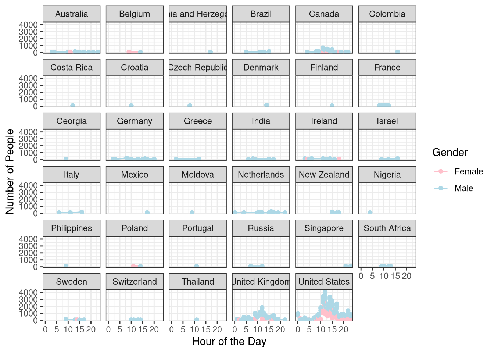
Since we did a count of demographics, let’s see how they interact with the different factors of mental health.
Gender
Gender is a well known demographic that has different disparities when it comes to mental health. Usually, women are more at risk for mood disorder and symptoms and anxiety disorders and symptoms. However, since there is a lot more men in that data set compare to women, the data might tell us something else. So why don’t we take a look at how gender plays a role in some of the factors of mental health.
For this, let’s look at Growing_Stress, Mood_Swings, Treatment, Coping_Struggles, Mental_Health_History, and Family_History.
History
Let’s start with how participants who have a history with mental health based on gender.
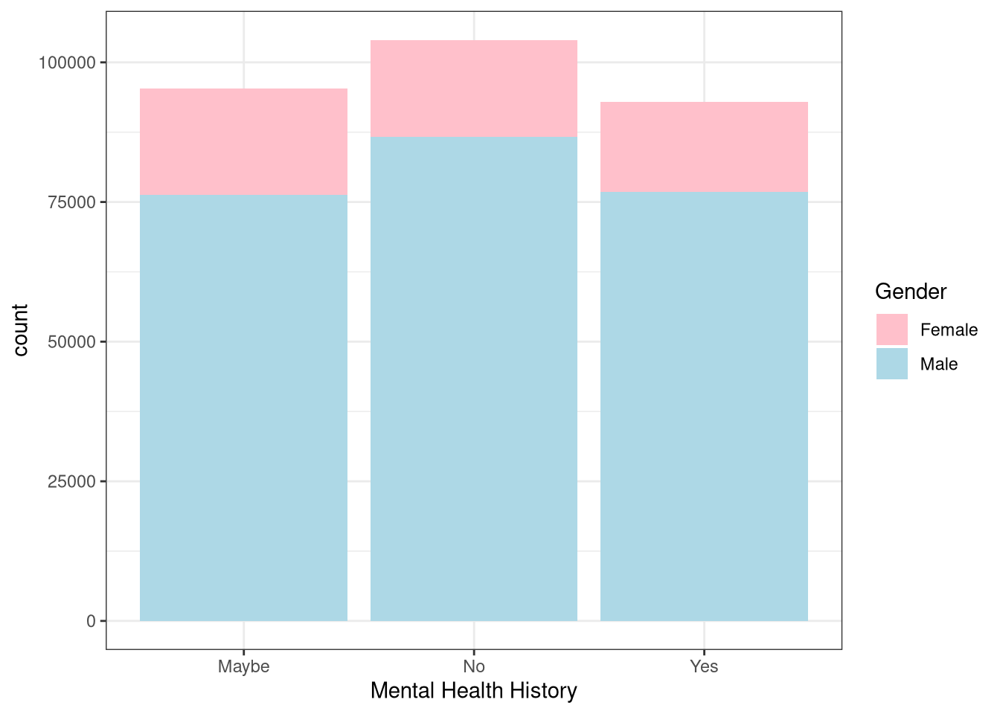
As predicted, there is more men then women who have a history with mental health. But what about family history?
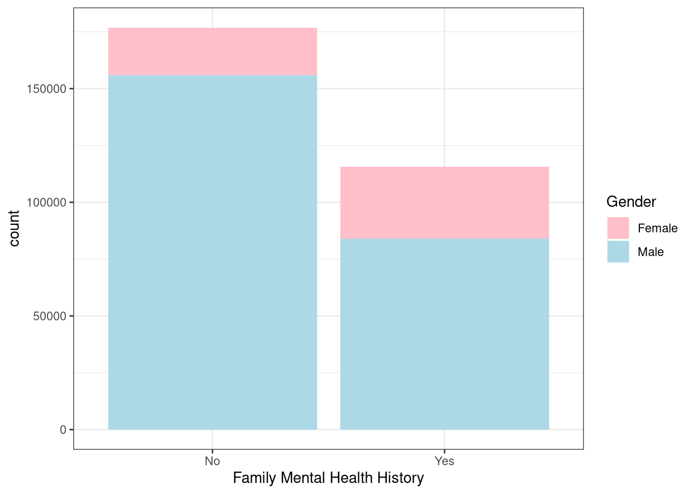
How interesting that family_history doesn’t have a maybe column like the previous bar graph. Just like the previous graph, it is overwhelmingly men then women.
Symptoms
In this section, let’s look at how gender can play into effect at different mental health symptoms that can pre-determine or factor into mental health.
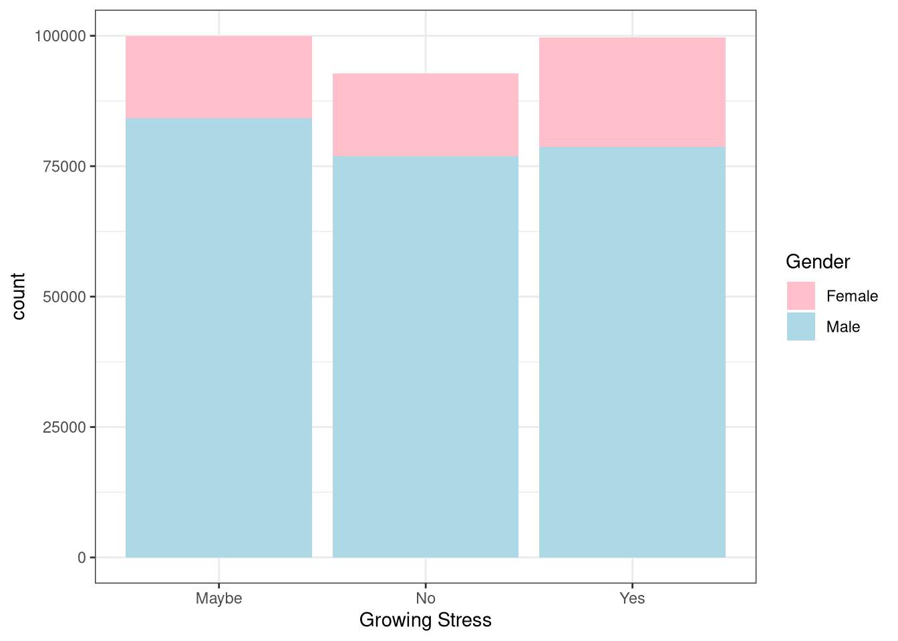
Well that’s interesting. Even though there is still an overwhelmingly huge response from men, a good portion of women said yes to being stress compared to the no and maybe responses. Meanwhile for men, there is only a slightly higher stress levels compared to the no category while it’s mostly a maybe for men.
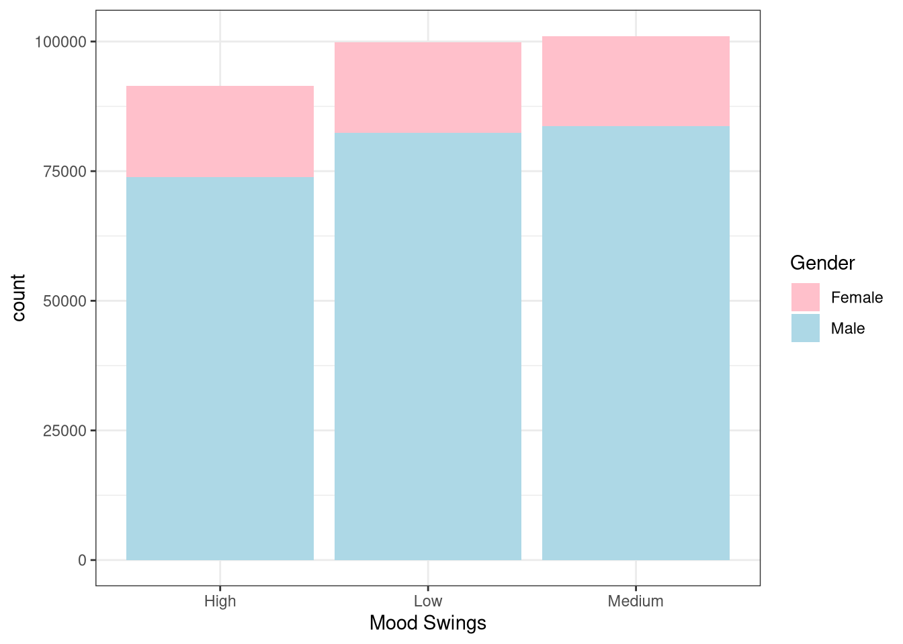
The responses for this graph is slightly similar to the increase in stress graph. While men are ranked lower in the high category for mood swings, it seems like their highest category is medium mood swings. Meanwhile, women experience high mood swings and about the same amount of mood swings in the other two categories.
Treatment and Coping
In this section, let’s look at how gender can play into effect in how people receive treatment or have difficulty in coping with pressure or stress.
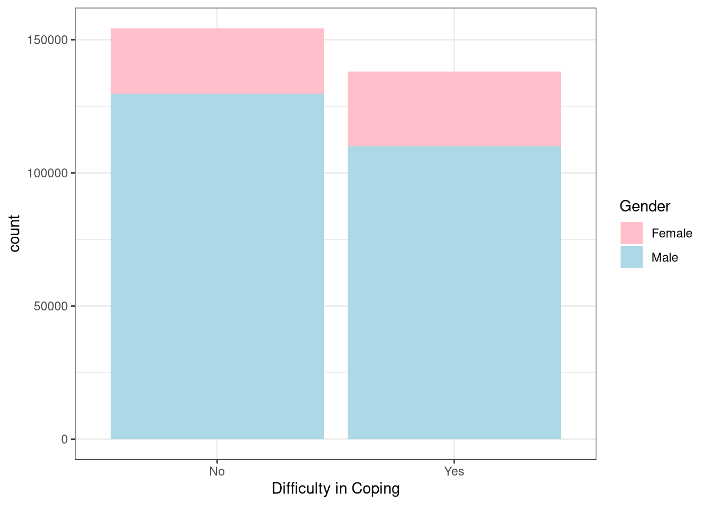
It seems like while men are less likely to struggle coping with pressure and stress, women are more likely to struggle.
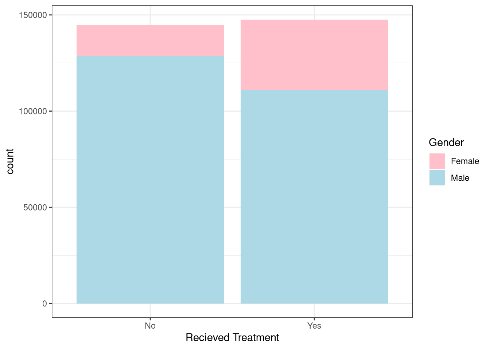
That’s a huge disparity. It seems like more women are receiving treatment or therapy for their mental health problems compared to men who mainly don’t receive anything for their mental health problems.
Occupation
Occupation is another well known demographic that has different disparities when it comes to mental health. Usually, those who are unemployed or students has more mental health problems due to socioeconomic reasons.
For this, let’s look at Growing_Stress, Work_Interest, Coping_Struggles, Changes_Habits, Social_Weakness, and Mental_Health_History.
Stress and Work Interest
In this section let’s see how stress can play into work interest for different occupations. From there, let’s see if there have been any coping difficulties to manage the pressure and stress.
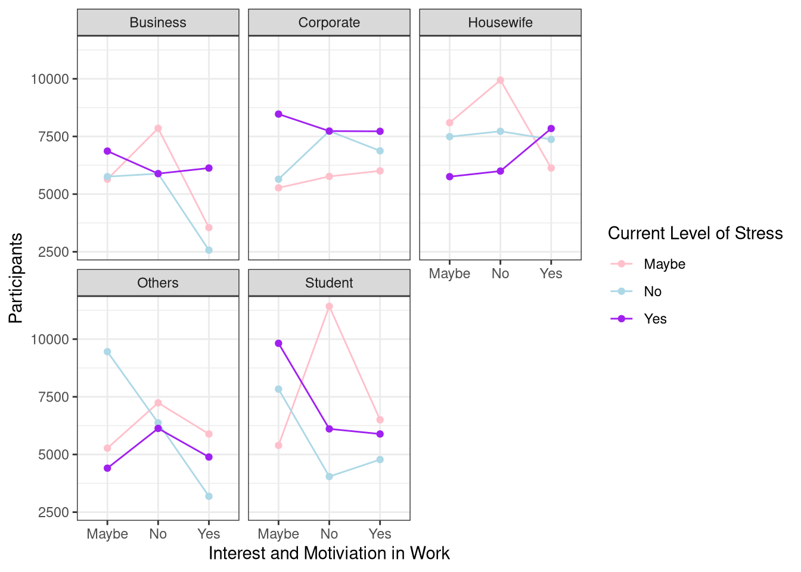
For a majority of these occupations, it seems like when there is a small amount of stress and pressure put upon them, the more interested and motivated they are in their work.
So how does this play into how they cope with that stress based on occupation?
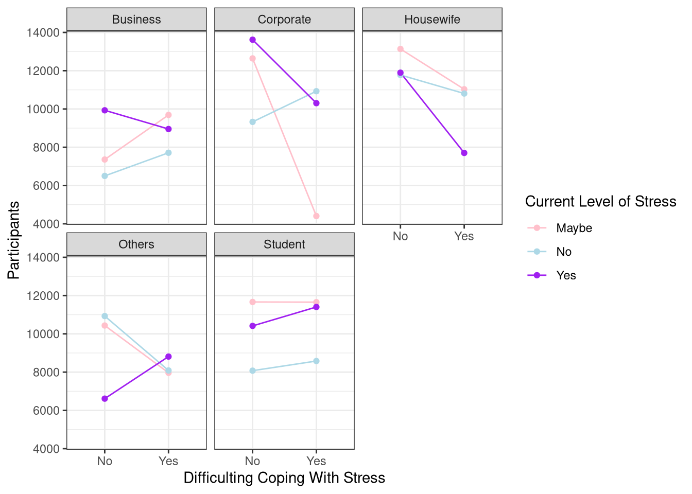
It seems that those with high levels of stress are also having difficulty managing stress, which is affecting their mental health.
Changes
I want to see if depending on the occupation and stress, if there have been any changes in their sleeping habits or patters. Additionally, does the type of occupation and stress affect relationships?
Let’s start off by looking into how sleep patterns and habits are affected by types of occupation and stress.
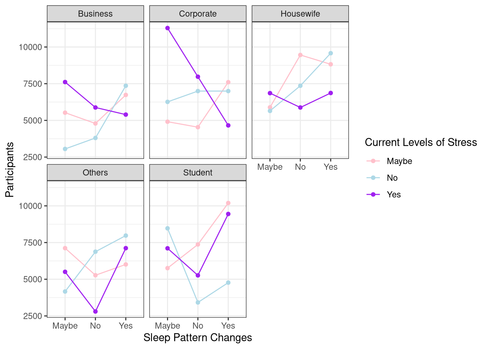
Seems like most changes of sleep patterns and habits correlate with a high level of stress.
Let’s now look into how it may have been difficult to interact socially or maintain relationships based on stress and occupation.
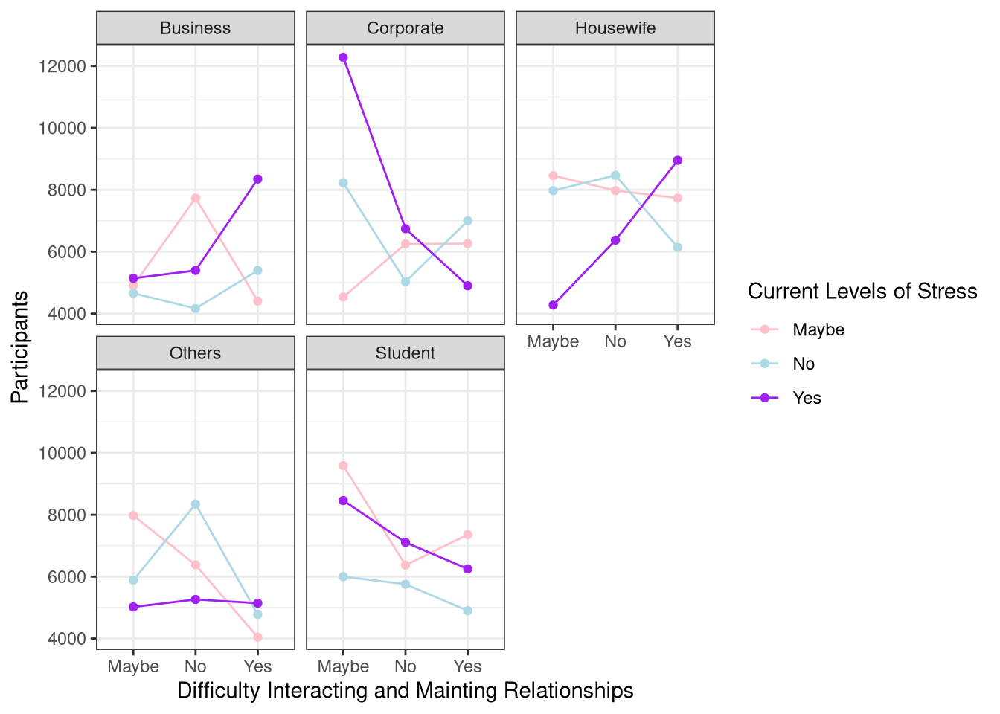
It seems to be all over the place depending on the occupation. Looks like that the majority have said it was difficult to maintain a relationship or interact socially depending on the occupation and current levels of stress.
Mental Health
Finally, in this section let’s look at how mental health is affected by occupations.
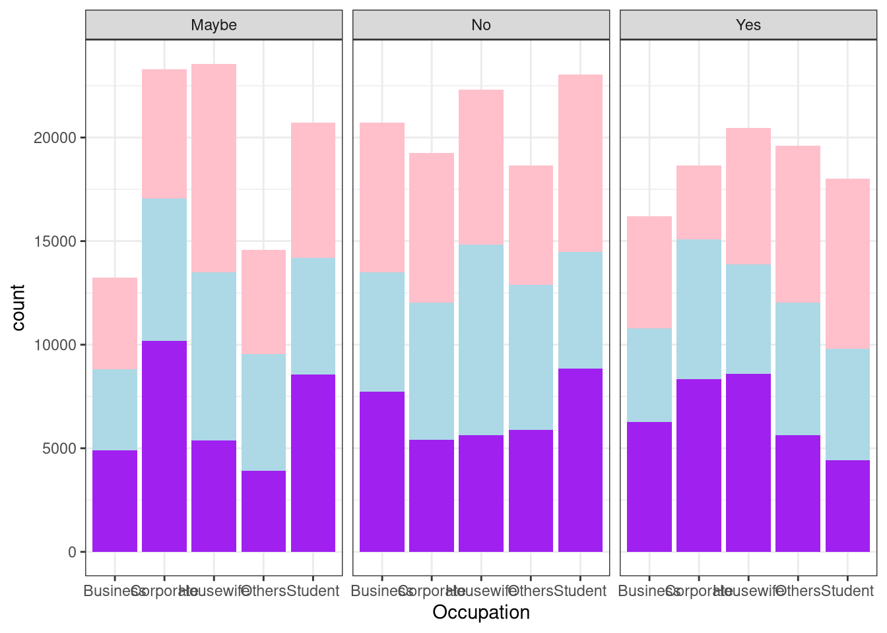
It looks like it also depends on the occupation participants have. It is all over the place for maybe having mental health disorder and seems like those who indicated that they may have some levels of stress may also have some mental health disorder. There seems that a participant has either indicated no or a maybe to having stress with no mental heath disorders.There is a low indication and confirmation from participants that they have some form of mental health disorder. From here they mainly either indicated yes or a maybe for increase in stress.